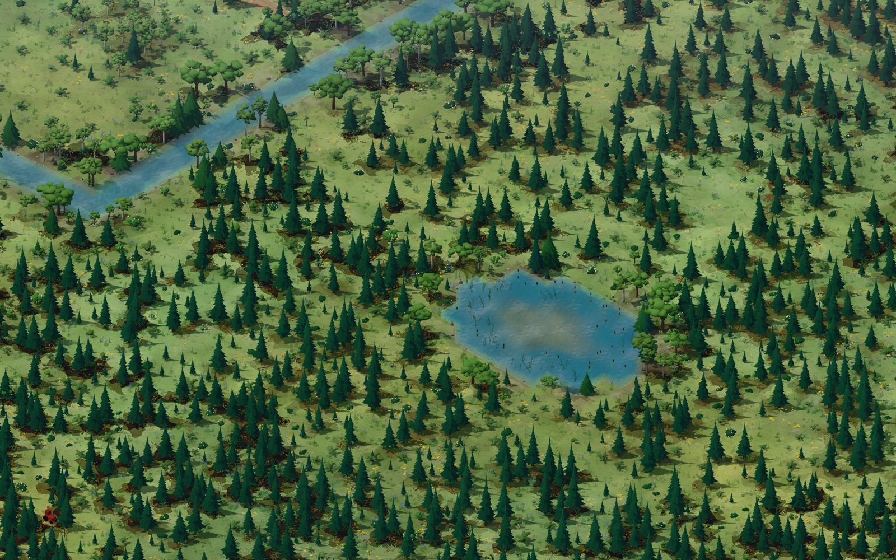
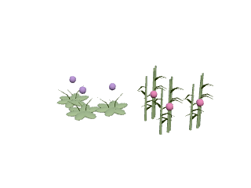
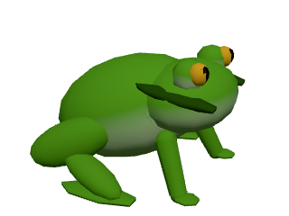

A rewilding game. Come get your hands dirty.
Let it
grow wild.
Turn a tired old farm into a thriving little world.
Plant the forest. Bring back the water.
See who makes themselves at home.
Free to play. Just you, your browser, and a bit of dirt.
Welcome to your outside.
A little dirt under
your fingernails.
A lot of life ahead.

You’ve inherited some land.
Nature’s got a few ideas for it.
Second Growth is a 3D rewilding game. Tear out the old farm, dig a wetland, plant something native. Make a place where life can happen again.
Wildlife finds its own way in. A bird in the new shrubs. A deer at the forest edge. Eventually, a whole ecosystem doing its thing.
You give them a reason to stay.
Where will you put down roots?
Find your patch.
Seven landscapes. Different plants, different neighbors.
Same chance to leave it a little wilder.

Hollis Farm · Washington
Pacific Northwest
A salmon creek, a worn-out dairy farm, and a forest waiting at the fence line. Bring the water back and make room for elk, beavers, and birds.
Boots by the door. Questions here.
Before you
head out.

Small frog.Big supporter of wetlands.
What kind of game is this?
A 3D ecosystem simulation about restoring habitats. You shape land and water, plant natives, manage your budget, and watch wildlife respond. There’s plenty to tend to, and plenty to just sit and watch.
Do I need to install anything?
Nope. It’s free to play right in a modern browser with WebGL support. A bigger screen gives you more room to explore, and touch controls are available too.
Can I come back to my land?
Yes. The game autosaves in your browser on this device. Return using the same browser and website. Private browsing and clearing site data can remove your saves.
How do I get wildlife to move in?
Start with what they need: food, water, shelter, and a route into the landscape. Wildlife arrives when the habitat suits it, raises young, hunts, and moves on when conditions change.
Your browser. Your patch of wild.
Go on.
Get a little muddy.
Let’s grow something There’s a whole little world waiting for you.